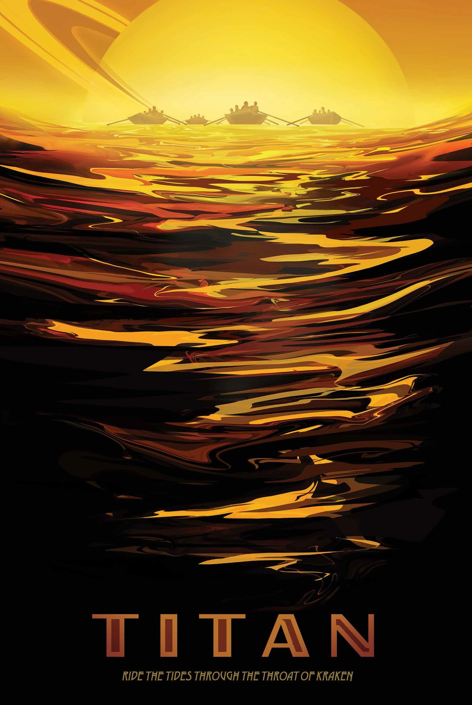

Frigid and alien, yet similar to our own planet billions of years ago, Saturn's largest
moon, Titan, has a thick atmosphere, organic-rich chemistry and a surface shaped by rivers and lakes
of liquid ethane and methane. Cold winds sculpt vast regions of hydrocarbon-rich dunes. There may
even be cryovolcanoes of cold liquid water. NASA's Cassini orbiter was designed to peer through
Titan's perpetual haze and unravel the mysteries of this planet-like moon.